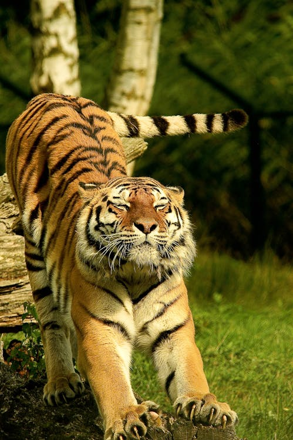
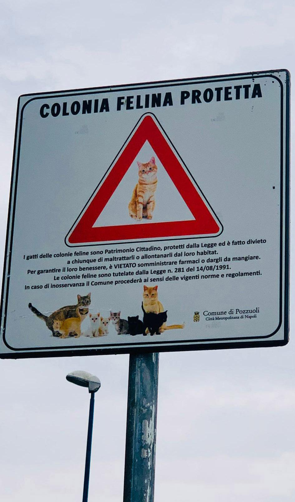

Diversità delle Specie

La famiglia dei felidi comprende una vasta gamma di specie, dalle grandi e imponenti tigri e leoni alle più piccole e agili linci e gatti domestici. Ogni specie ha adattamenti unici che le rendono particolarmente adatte al loro habitat specifico. Ad esempio, le tigri, con le loro strisce mimetiche, sono esperte cacciatrici nella giungla, mentre i gatti domestici hanno sviluppato artigli retrattili per la caccia e la difesa.
Ecologia e Habitat
I felidi sono diffusi in tutto il mondo, dall'Africa alle Americhe, dall'Asia all'Europa. Occupano una vasta gamma di habitat, tra cui foreste pluviali, savane, deserti e montagne. Ogni specie si è adattata alle condizioni ambientali specifiche del suo habitat, sviluppando comportamenti di caccia e sopravvivenza unici.
Comportamento sociale
Il comportamento sociale dei felidi varia notevolmente da specie a specie. Alcune, come i leoni, vivono in gruppi sociali chiamati branchi, mentre altre, come i leopardi, sono solitarie e territoriali. Anche i gatti domestici hanno sviluppato una forma di socialità, formando legami con altri gatti e con gli esseri umani che li accudiscono.
Interazioni con l'Umanità
Il rapporto tra i felidi e l'umanità è complesso e variegato. Mentre alcune specie, come i leoni e le tigri, sono state venerate e temute in molte culture, altre, come i gatti domestici, sono diventate parte integrante della vita quotidiana dell'uomo. Tuttavia, la perdita di habitat, la caccia illegale e altri fattori minacciano molte specie di felidi in tutto il mondo.
Adattamenti Evolutivi

I felidi hanno sviluppato una serie di adattamenti evolutivi che li rendono dei predatori altamente efficienti. Questi includono artigli retrattili per la caccia e la difesa, denti affilati per sbranare le prede e una vista e un udito eccezionali per individuare e catturare le prede.
Conservazione e Protezione
La conservazione dei felidi è diventata una priorità per molte organizzazioni ambientaliste e governi in tutto il mondo. Sforzi di conservazione come la creazione di parchi nazionali, la protezione degli habitat critici e la lotta contro il bracconaggio sono fondamentali per garantire la sopravvivenza di queste magnifiche creature per le generazioni future.